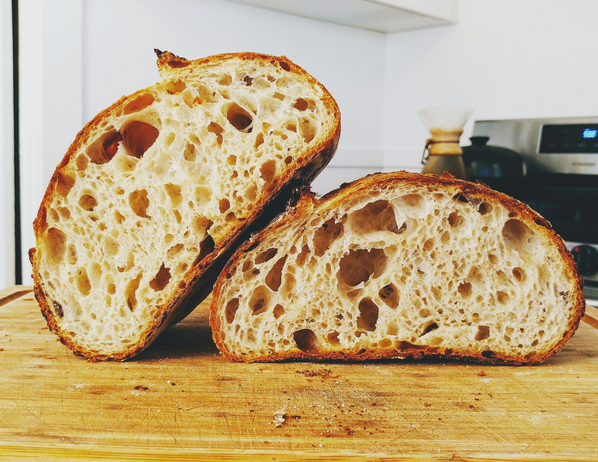

About Us :
At Artisan Food & co, we persevere to be the best, the best of the best. Artisan Food & CO founded in 1993 by Niraj Gandhi is a fabulous artisan bakery and produces the highest quality cheese and bread. We like to produce flavour packed Artisan food crafts for our clients and have a record of being the best! our awards prove it! That is why you should choose Artisan Food & CO, the best of the best.
